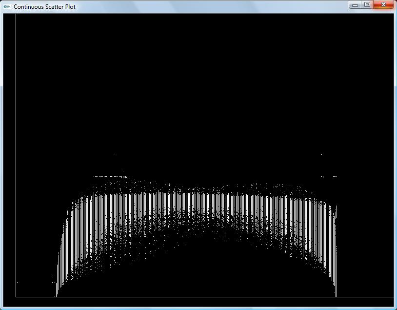
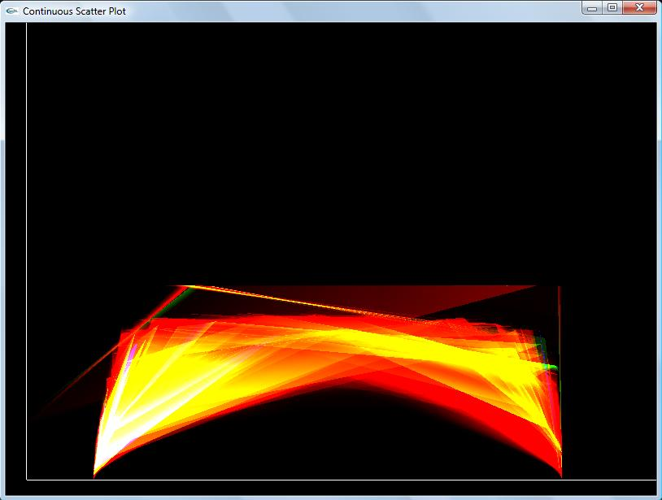
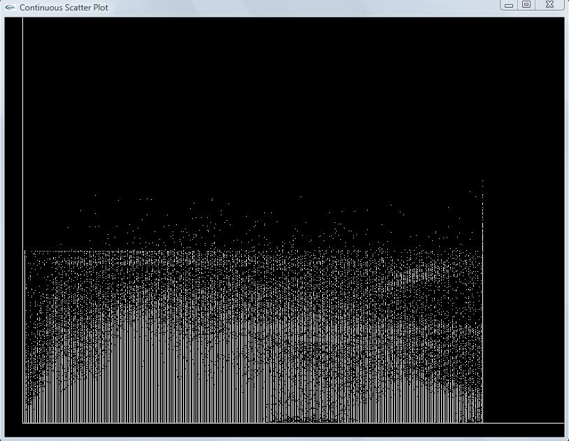
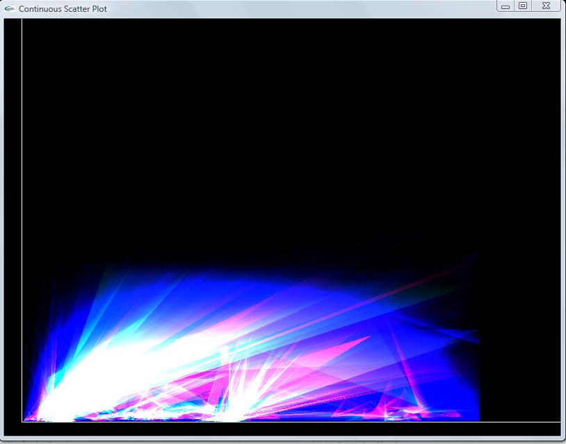

Project 788
This is a project where I am working at generating "Continuous Scatter
Plot" for continuous input data rather than showing the discrete
scatter plot. The data is given in 3-Dimensional spatial domain (x,y
and z coordinates) and 1-Dimensional scalar data. I take the gradient
of the scalar data to make the scalar data 2-dimensional and then work
on the algorithm to output the continuous scatter plot. I am working on
the case from the paper (m < n) which is mostly found in the
regular datasets.
Here is my project proposal
Paper Reference : Continuous Scatter Plot
Progress in the Project
1. Collected the input dataset. This data set is 3-D(spatial) X 1-D(scalar).
2. Read the input dataset into an array. I used my own code for this. I
did not use NrrdIO library because I had troubles compiling that for
windows.
3. Calculate the gradient of the input scalar data and store in the
array. Now we have 3-D(spatial) X 2-D(scalar) data set as the input.
4. The input mesh is broken into cubes.
5. Each cube is decomposed into six tetrahedrons. (No cracking problem)
6. Now each tetrahedron is projected into data space and is further divided into triangles.
7. Each triangle has 3 points each of which has two scalar values. I
calculate the IsoSurfaces for the traingle vertices' scalar values.
Inside the tetrahedron, the Isosurface is a triangle.
This algorithm which finds the Isosurface inside the tetrahedron
is written by me. I did not use any of the existing marching
tetrahedron library already available inside OSU.
8. For each vertex, we have two triangles for the two scalar values.
Now I calculate the intersection of the two triangles. This is a
straight line. The length of the line is calculated and stored.
9. Volume measure is calculated as the cross product of the gradient of the two scalar values.
10. Divide the line length by volume measure and use this value to look
up from a predefined color map and assign the color to the vertex.
11. Using OpenGL, I repeat these steps for all the triangles and their vertices and draw on screen with additive blending.
Results
I have tested my code on a few datasets. I have computed the
discrete scatter plot first. Then I got the continuous scatter
plot. I am attaching the results for shockwave.raw and teddybear.raw below.
The scalar data is in the X-axis and the gradient of the scalar data is in the Y-axis for the output scatter plots.
shockwave.raw (64x64x512)

Discrete Scatter Plot

Continuous Scatter Plot
(Red color shows lowest density, then yellow and
then white shows the highest density)
Teddybear.raw (62x128x128)

Discrete Scatter Plot

Continuous Scatter Plot
(Blue is the lowest density here, then pink and the
highest density is shown by white color)
Remaining works
Extend the code for functions which are partially constant (The case where the volume measure is 0).
Final Presentation can be found here